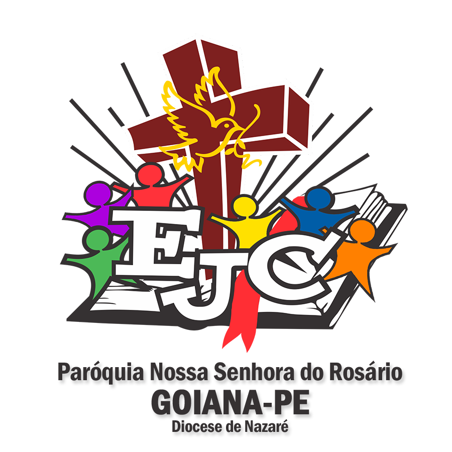

Fé
Uma oportunidade de fortalecer nossa relação com Deus.
ENCONTROE algumas experiências permanecem para sempre.

Algumas experiências precisam ser vividas para serem compreendidas.
O Encontro de Jovens com Cristo é uma experiência de evangelização que convida jovens a fortalecer sua fé, construir amizades e descobrir a beleza de caminhar em comunidade.
É um convite para conhecer mais de perto o amor de Deus, encontrar novos propósitos e fazer parte de uma caminhada que continua muito além de um único encontro.
Uma oportunidade de fortalecer nossa relação com Deus.
ENCONTROLaços verdadeiros que nascem da partilha e do acolhimento.
COMUNIDADEDescobrir a alegria de servir e cuidar do próximo.
PROPÓSITOUm convite para recomeçar e escrever novos capítulos.
RENOVAÇÃONão podemos contar tudo. Mas podemos te dizer uma coisa...
Existem momentos que as palavras não conseguem traduzir. Mas que o coração jamais esquece.
Você pode até tentar imaginar. Mas existem coisas que só vivendo para entender.
Cinco pilares. Uma só fé. Um amor que nos une.
Não foi possível carregar o modelo 3D. Verifique sua conexão com a internet.
O centro da nossa caminhada é Cristo.
ALEGRIA • ORAÇÃO • SIMPLICIDADE • DOAÇÃO • POBREZAUma fé que atravessa gerações.
Cada sorriso, cada encontro e cada pessoa fazem parte de uma história que continua sendo escrita.
23 anos. Incontáveis histórias. E a nossa continua.
ARRASTE COM OS OLHOS, REVIVA COM O CORAÇÃOAlgumas músicas não são apenas melodias. São encontros, lembranças, orações e histórias que permanecem em nós.
14 canções que marcaram nossa caminhada. Ouça e reviva cada lembrança.
Porque algumas histórias também merecem ser ouvidas.
Há encontros que acontecem uma vez, mas permanecem por toda a vida.
O tempo passa. Os rostos mudam. Novas gerações chegam. Mas aquilo que Deus planta em nossos corações continua florescendo.
São 23 anos de histórias, amizades, orações, abraços e caminhos transformados pela fé. Vidas que se cruzaram e descobriram que ninguém precisa caminhar sozinho.
E, no meio de tantas lembranças, permanece a certeza de que o mais importante nunca foi apenas o encontro, mas tudo aquilo que começou depois dele.
Porque o EJC não é apenas algo que vivemos.
É uma história que continuamos a escrever.EJC GOIANA · 23 ANOS DE FÉ E HISTÓRIAS